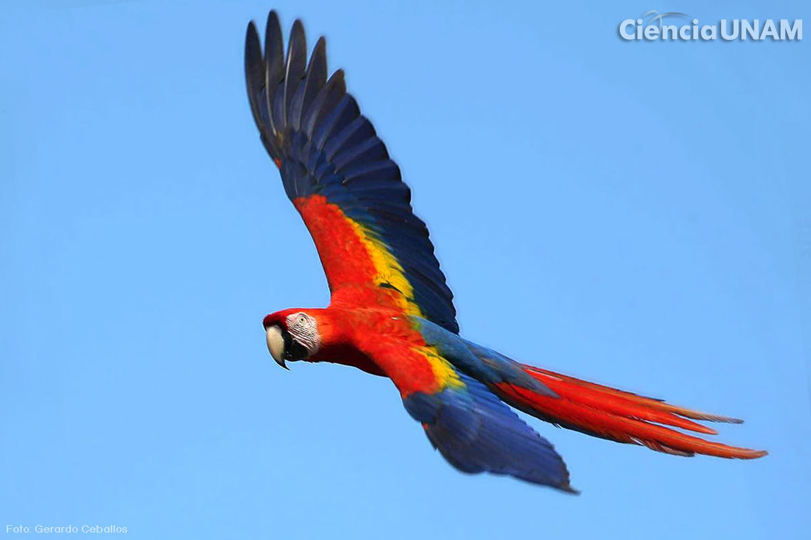

¿Como se considera una especie en peligro de extinción?Se le considera en peligro de extinción a una especie, cuando su existencia y reproducción no se puede desarrollar en ninguna parte del mundo. Es decir que ya nunca se podrá volver a ver. |
| ALGUNAS ESPECIES SON: | |
|---|---|
| PANDA | |
| AXOLOTL |  |
| KOALA |  |
| PANDA ROJO | |
| TIGRE | |
| GUACAMAYA |  |